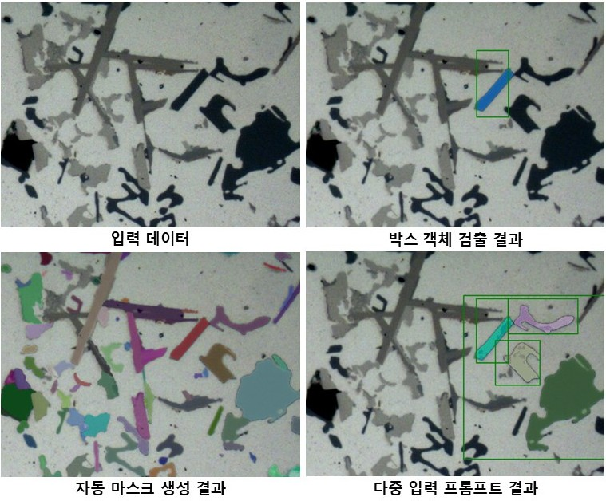

CAL
CAL
Control System Design
Active Disturbance Rejection Control (ADRC), Sliding Mode Control (SMC) 등 제어기를 설계하고, 시뮬레이션으로 성능을 검증합니다.
제어 시스템 설계, 임베디드·로봇 시스템, 컴퓨터 비전 연구와 지금까지 이어 온 연구 분야입니다.
Active Disturbance Rejection Control (ADRC), Sliding Mode Control (SMC) 등 제어기를 설계하고, 시뮬레이션으로 성능을 검증합니다.

로봇 팔과 모바일 로봇을 대상으로 강화학습·모방학습 기반 조작과 ROS 기반 자율주행을 연구합니다.

장면 문자 인식, VLM 기반 이상 탐지 등 영상 인식을 연구합니다. 준지도 학습 기반 미세조직 이미지 분할과 양식장 어류 크기 측정 연구를 수행해 왔습니다.
퍼지, 신경망, 유전 알고리즘
수중 무인 잠수정, 보드 설계, 전력선 통신, RFID
PC·PLC·VME 제어기, 실시간 OS(VxWorks, RTLinux)
박판주조, 연속주조